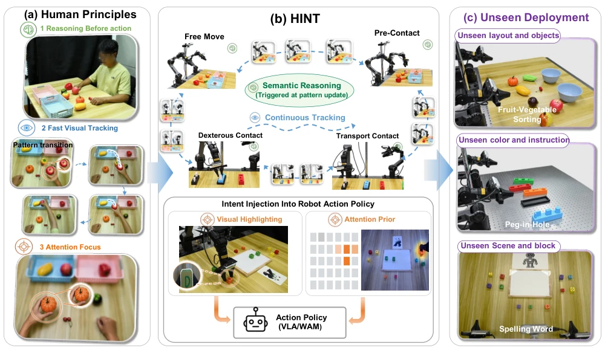
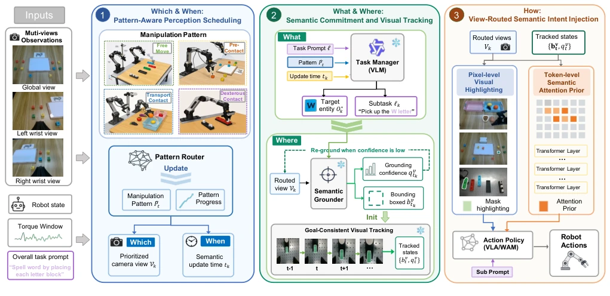
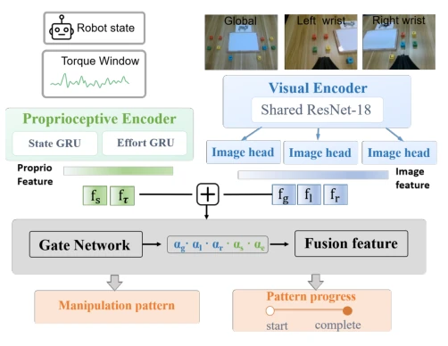
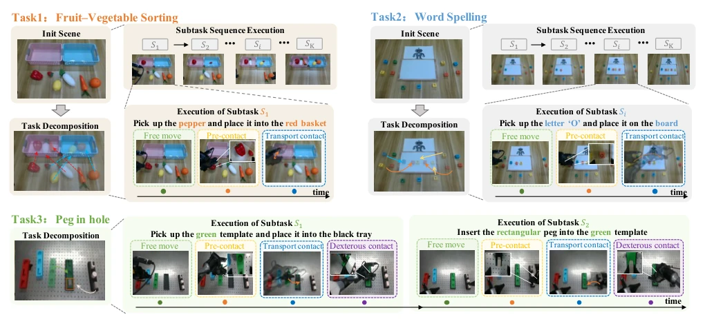
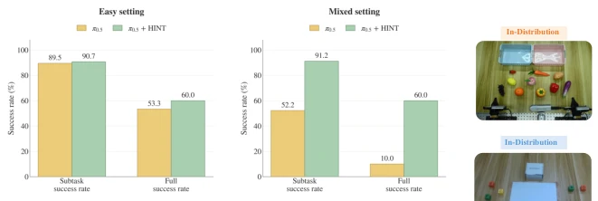
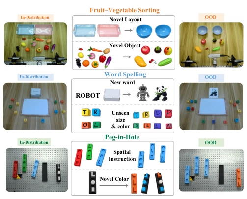
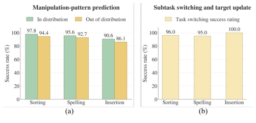
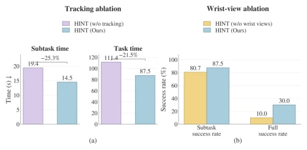

这篇 HINT 论文给 VLA 模型戴了个“人类意图头环”。它没试图让模型变聪明，而是通过外部提示让模型“别走神”。名字起得挺科幻（Inception），核心逻辑简单粗暴：人干活也是想一下再动，它就把推理频率降下来。虽然声称“零参数”省了训练成本，但视觉高亮在复杂背景下可能失效。依赖预定义的四种操作模式有点僵化，万一遇到没见过的交互模式，Router 会不会懵？此外，虽然推理频率低了，但多视图路由和跟踪本身也有开销。总的来说，是个聪明的工程 trick，比硬训大模型划算，但泛化性还得看后续，属于“用巧劲”而非“大力出奇迹”，适合特定长程任务而非通用机器人。
This HINT paper equips VLA models with a "human intention headband". It does not attempt to make the model smarter, but instead uses external prompts to prevent the model from "losing focus". The name is quite sci-fi (Inception), with a core logic that is straightforward: humans think before acting, so it reduces the inference frequency. Although it claims "zero-parameter" to save training costs, visual highlighting may fail in complex backgrounds. Relying on predefined four operation modes is somewhat rigid; what if it encounters unseen interaction modes, will the Router get confused? Furthermore, although the inference frequency is lower, multi-view routing and tracking themselves incur overhead. Overall, it is a clever engineering trick, more cost-effective than hard-training large models, but generalization remains to be seen, belonging to "using finesse" rather than "great effort yields miracles", suitable for specific long-horizon tasks rather than general-purpose robots.
Current VLA models [5]-[7] are prone to "visual short-circuiting" in long-horizon tasks. For instance, when asked to classify by color, it may directly recognize color rather than read instructions [6]. Since language instructions are sparse while visual signals are continuous, models tend to rely on visual shortcuts instead of semantic intent, resulting in intention drift. Existing methods either infer frequently leading to high latency [13], or have fixed perception modes unable to adapt to task variations [19]. HINT seeks to resolve this contradiction: semantic intent changes infrequently, but visual execution requires continuity. Without solving this, the model becomes a "visual slave" in long-horizon tasks, focusing only on the immediate view rather than instructions. Particularly when scenes change, static strategies struggle to adapt, necessitating dynamic semantic injection.

Fig. 1. Motivation and overview of HINT (Human-INTent INcePtion). (a) Human manipulation strategies that inspire HINT: humans identify the intended target before acting, track it throughout motion, and maintain target-focused attention during interaction. (b) HINT translates these strategies into semantic reasoning at manipulation-pattern transitions, continuous target tracking between transitions, and spatial-intent injection into the action policy via visual highlighting and an attention prior. (c) HINT is evaluated under unseen semantic-compositional variations in objects, layouts, colors, and instructions.
Divided into three steps. 1. Pattern Router determines whether the current state is "free movement" or "fine contact", deciding when to infer and which camera to observe. It employs a lightweight network to fuse multi-view and torque data, predicting mode progress. 2. Task Manager parses subtasks upon mode switching; Semantic Grounder locates the target, SAM2 tracks the target position, avoiding per-frame re-inference. 3. Intent Injection highlights the target on the image (pixel-level highlighting) and adds attention bias (Token-level), without altering policy network parameters. This design separates "what to do" from "how to do", allowing VLA to focus on action execution while HINT handles semantic alignment. Highlighting provides appearance invariance, attention bias reinforces spatial association, and the two complement each other.

Fig. 2. System overview of HINT. HINT consists of three parts: (1) The pattern router estimates the current manipulation pattern and its progress to select the prioritized camera views Vk and the semantic update time tk. (2) At an update, the task manager resolves the active subtask and target entity, the semantic grounder localizes the target in the routed views, and goal-consistent tracking maintains the target state between updates; (3) The intent is injected into the action policy through pixel-level highlighting and a token-level semantic attention bias to generate robot actions.

Fig. 3. Architecture of the manipulation-pattern router.

Fig. 4. Evaluation tasks and their decomposition into manipulation patterns. Fruit-vegetable sorting (top left) and word spelling (top right) require a sequence of pick-and-place subtasks, each comprising free move, pre-contact, and transport contact. Peg-in-hole insertion (bottom) further includes dexterous contact for contact-rich placement and insertion. Si denotes the ith semantic subtask; colored outlines and timelines indicate the manipulation pattern active during each execution segment.
实验Experiments
在三个任务上测了 π0.5 和 Wall-OSS-0.5。OOD 设置下，IS 提升巨大（π0.5 从 41% 到 89%），Full SR 从 0% 到 30%。但 Peg-in-Hole 的 Full SR 还是低，说明接触控制没解决。延迟方面，推理只在切换时触发，比每帧推理快。消融实验显示高亮和注意力都重要，单一路径效果差。在 Word Spelling 任务中，HINT 显著抑制了视觉捷径，证明了语义注入的有效性。
Evaluated on three tasks using π0.5 and Wall-OSS-0.5. Under OOD settings, IS improved dramatically (π0.5 from 41% to 89%), Full SR from 0% to 30%. However, Full SR for Peg-in-Hole remains low, indicating contact control is not resolved. Regarding latency, inference is triggered only upon switching, which is faster than per-frame inference. Ablation studies show both highlighting and attention are important, with single-path performance being poor. In the Word Spelling task, HINT significantly suppressed visual shortcuts, demonstrating the effectiveness of semantic injection.

Fig. 5. Effect of visual shortcuts on fruit-vegetable sorting. In the easy setting (left), fruits always map to the blue basket and vegetables to the red basket; in the mixed setting (right), the instruction specifies a variable category-to-basket mapping.

Fig. 6. Three task out-of-distribution (OOD) test configurations. We evaluate generalization across unseen objects, goal representations, visual attributes, spatial layouts, and semantic instructions.

Fig. 7. Reliability of manipulation-pattern-based online routing. (a) Manipulation-pattern prediction success rate under ID and OOD conditions, evaluated over 180 trials for each task-condition pair. (b) Subtask-switch success rate aggregated over ID and OOD conditions and evaluated over 100, 100, and 60 transitions for sorting, spelling, and insertion, respectively. A switch is successful only if the transition is detected and the correct next semantic target is activated.

Fig. 8. Independent ablations of continuous tracking and wrist-view perception on OOD word spelling. Tracking reduces completion time, while wrist views improve subtask and full-task success rates.